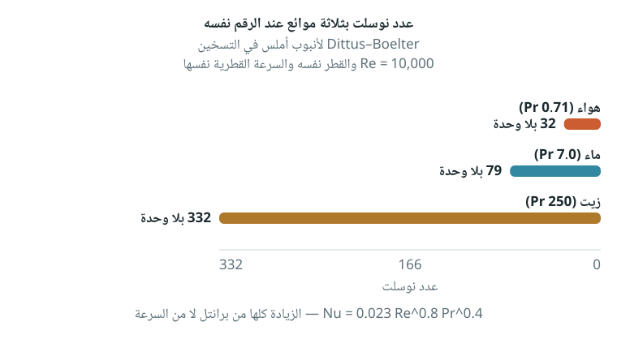

عدد نوسلت
عدد نوسلت يقيس شدّة انتقال الحرارة الحملي من سطح: Nu = h·L/k. القيمة 1 تعني توصيلًا صرفًا، وما فوقها يعني أن الحمل يضاعف النقل عبر الطبقة نفسها، فتصبح أداة مقارنة بلا وحدات بين هندسات وموائع.
عدد نوسلت نسبة بين انتقال الحرارة الفعلي من سطح وانتقالها بالتوصيل في الطبقة الساكنة نفسها: Nu = h·L/k، حيث h معامل الحمل وL طول مميّز (قطر الأنبوب أو طول السطح) وk موصلية المائع. عند Nu = 1 لا يفعل الحمل شيئًا يزيد على التوصيل الصرف؛ وفي الغازات الساكنة يبلغ نحو 2 لأسطوانة، ويرتفع إلى 30–300 في الحمل القسري المضطرب، ويبلغ آلافًا في التكثيف والغليان. أهميته أنه يجعل نتائج التجارب عامة: قياس نوسلت في أنبوب صغير بمائع واحد يُستعمل لأنبوب كبير بمائع آخر إذا تساوى الرقم نفسه من رينولدز وبرانتل. ومعادلاته التجريبية مكتوبة على صورة Nu = C·Re^m·Pr^n، ومنها Dittus–Boelter للأنابيب الملساء في الحمل القسري المضطرب.
كيف تعمل الظاهرة؟
عند السطح تتكوّن طبقة مائع شبه ساكنة تنقل الحرارة بالتوصيل وحده تقريبًا، وسماكتها تحدد المقاومة الحرارية. الجريان يرفع التدرّج داخل الطبقة ويقلّل سماكتها، فيزيد التدرّج الحراري عند الجدار ويزيد النقل؛ ونوسلت هو قياس كم صار التدرّج الفعلي أكبر من تدرّج التوصيل الصرف لو كان المائع ساكنًا بكامله. ولهذا يرتبط نوسلت بسماكة الطبقة الحدّية الحرارية: كلما رقّت الطبقة ارتفع الرقم.
العلاقة بالأرقام
في أنبوب أملس عند Re = 10,000 وعلاقة Dittus–Boelter Nu = 0.023·Re^0.8·Pr^0.4 (تسخين): الرقم المشترك 0.023×1585 = 36.5؛ فيكون نوسلت 32 للهواء (Pr 0.71) و79 للماء (Pr 7.0) و332 للزيت (Pr 250). ولتحويله إلى معامل حمل: h = Nu·k/L؛ فأنبوب قطره 25 مم بماء k = 0.6 يعطي h = 79×0.6/0.025 = 1,900 واط/(م²·كلفن).
مفاهيم متقاربة
نوسلت ليس عدد بيوت: بيوت Bi = h·L/k_solid يستعمل موصلية الجسم الصلب ويحكم تجانس حرارته داخليًّا، أما نوسلت فيستعمل موصلية المائع ويصف الطبقة عند سطحه. وليس عدد بيكليه Pe = Re·Pr الذي يجمع الحمل بالانتشار، بل هو ناتج مستقل يُقاس تجريبيًّا أو يُستخرج من علاقة.
حدود التطبيق
في الجريان الصفحي المطوَّر تمامًا داخل أنبوب ثابت الحرارة السطحية يصبح نوسلت رقمًا ثابتًا (4.36 للحرارة الثابتة و3.66 للحرارة المنتظمة على السطح) ولا يفيد كمتغيّر. وقرب مدخل الأنبوب يرتفع الرقم بسبب الطبقة غير المطوَّرة، وعلى الأسطح ذات الزعانف أو الأسطوانات يعتمد الطول المميّز اختيارًا يجب ذكره. وفي الغليان والتكثيف يُستبدل بعلاقات تعتمد على فرق الحرارة نفسها.

| الكمية | القيمة | المصدر |
|---|---|---|
| نوسلت محسوب بالهواء (Pr 0.71) عند Re 10,000 | 32 بلا وحدة | [1] |
| نوسلت محسوب بالماء (Pr 7.0) عند Re 10,000 | 79 بلا وحدة | [1] |
| معامل الحمل المقابل لأنبوب 25 مم بماء | 1900 واط/(متر مربع·كلفن) | [1] |
| صيغة التعريف | Nu = h·L/k بلا وحدة | [3] |
المصادر
- 1 Understanding Convective Heat Transfer: Coefficients, Formulas & Examples — The Engineering ToolBox. www.engineeringtoolbox.com/convective-heat-transfer-d_430.html · اطُّلع عليه 2026-11-19
- 2 14.6 Convection - College Physics 2e — OpenStax. openstax.org/books/college-physics-2e/pages/14-6-convection · اطُّلع عليه 2026-11-19
- 3 Nusselt number — Wikipedia (الإنجليزية). en.wikipedia.org/wiki/Nusselt_number · اطُّلع عليه 2026-11-19
استشهد بهذا المصطلح
الصيغتان مبنيتان من بيانات الصفحة نفسها: العنوان والتاريخ ورابط النسخة المنشورة.
عدد نوسلت. (2026). ديوان المعرفة — انفراد. https://infiradev.com/diwan/terms/nusselt-number.html
@misc{nusselt-number2026,
title = {عدد نوسلت},
howpublished = {{ديوان المعرفة — انفراد} — مرجع علمي عربي},
year = {2026},
url = {https://infiradev.com/diwan/terms/nusselt-number.html},
urldate = {2026-11-19},
note = {مراجعة علمية: عبدالله الهويدي — مراجعة في تطبيق انفراد}
}
راجعه: عبدالله الهويدي — مراجعة في تطبيق انفراد · 2026-11-19 · آخر تحديث 2026-11-19